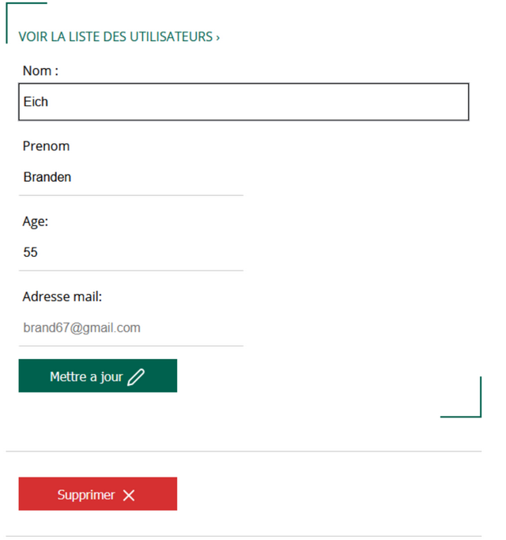

Présentation du projet
Cette partie de site admin a pour but de permettre aux administrateurs des Maisons des ligues, de recenser leurs clients. Pour ce faire, il faut créer une interface admin qui permet d’ajouter un client, modifier sont profile ou le supprimer.
Lien github du projetSpécification du besoin
- Un administrateur de la ligue a la possibilité de gérer des clients de sa ligue. Il sera possible d'ajouter un client, de mettre à jour les données d'un client ou de le supprimer
- Coté publication la mission consiste à afficher l’identifiant, le nom, prénom, age et email et deux liens pour pouvoir mettre à jour les données d'un client et de le supprimer
Voici le résultat attendu de l'interface d'admin
Formulaire ajouter un client
Pour les enregistrements à publier il faut créer une page avec un formulaire de 4 champs : Nom, Prénom, Age et adresse mail. Tous les champs sont obligatoires. Afficher un warning dans le cas ou l’administrateur ne renseigne pas un champ.
Mettre à jour et supprimer un client
Aspect technique
- 1)Les technologies autorisées sont : html5 css3 et php orienté objet
- 2)Police de caractères : ‘Open Sans’, sans-serif
- 3)Couleur des boutons : #09599A(blue), #00614E(vert) et #d63031(rouge) La couleur des thèmes doivent être indexée dans des variables css
- 4)Utilisez Visual Studio Code et phpMyAdmin pour la bdd
- 5)Le code HTML généré doit être valide selon les normes du W3C et tester également pour les spécificités de la WAI et du WCAG (accessibilité)
- 6)Le rendu doit être publié sur un dépôt Github. Celui-ci doit avoir une structure logique, contenir un readme.md avec présentation du projet et un fichier « .gitignore » si besoin